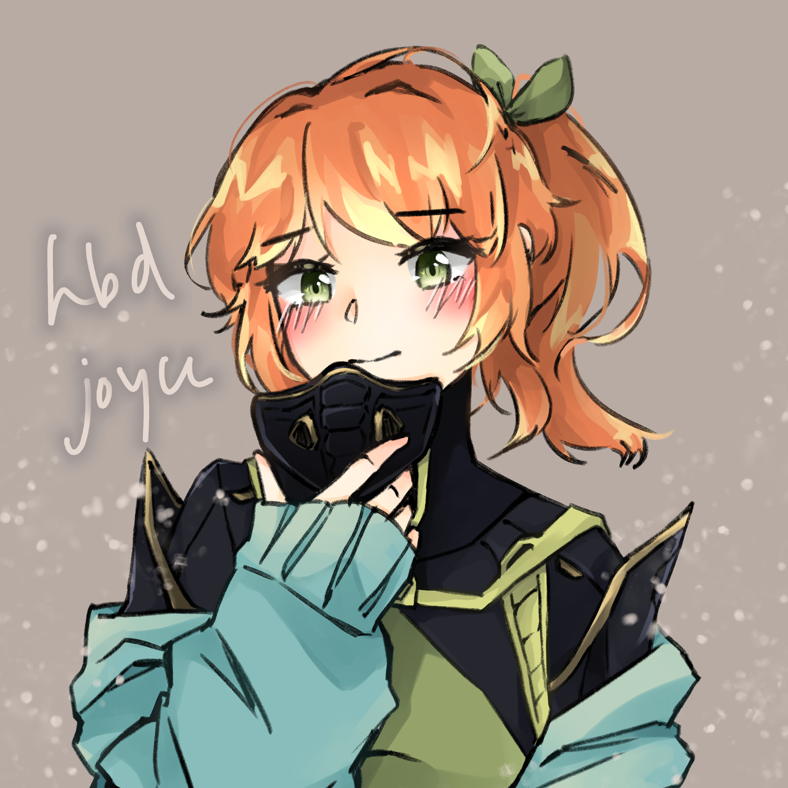
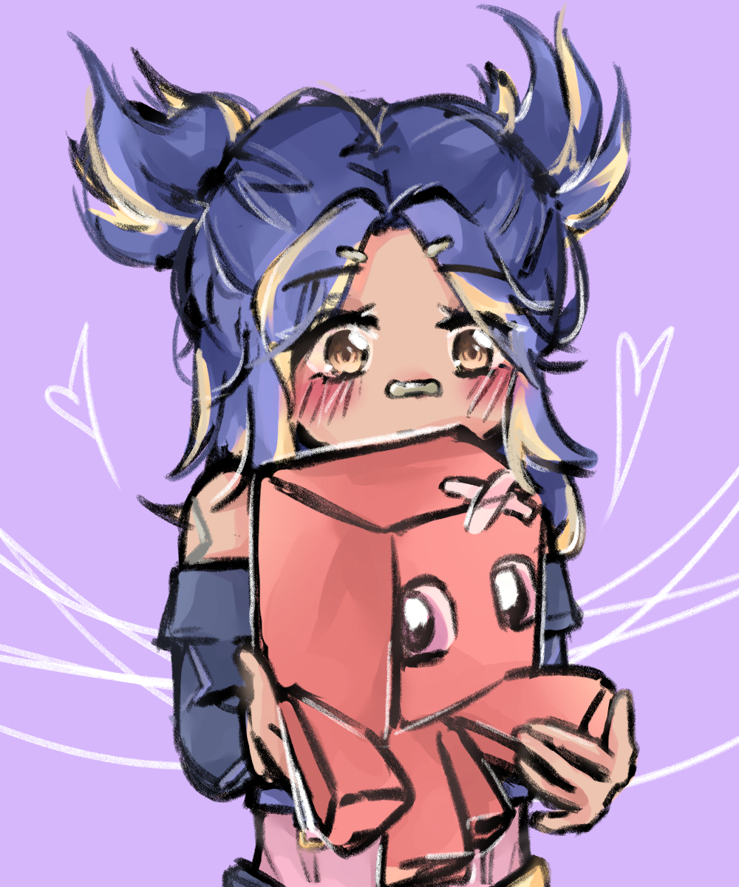
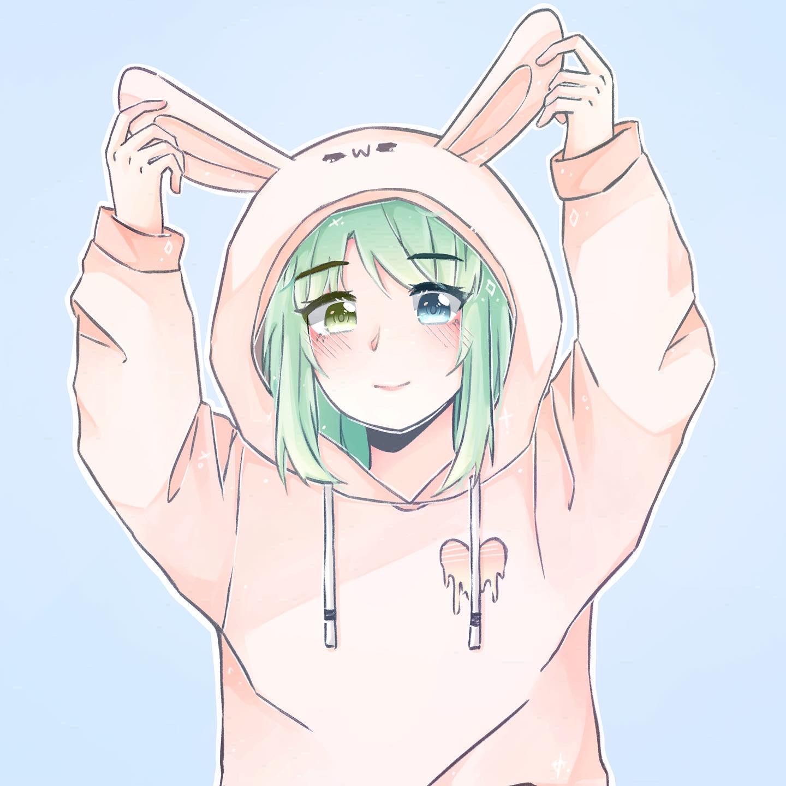
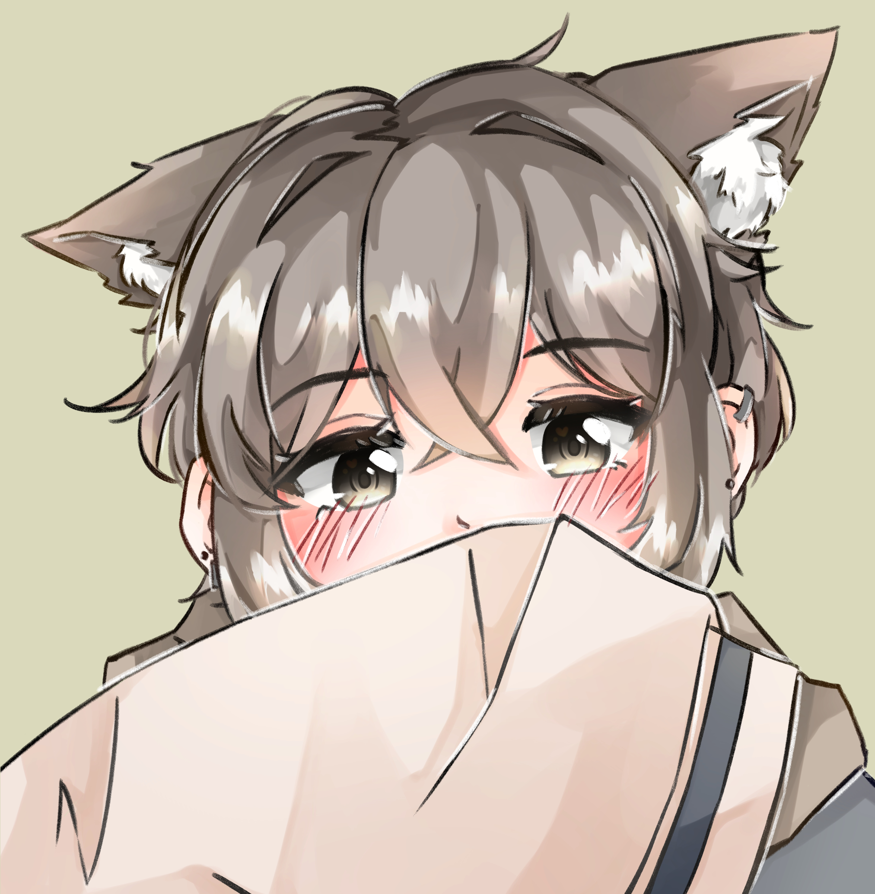

Fanart of my two favorite character from the video game Valorant. The girl on the left is called Jett, and one on the right is called Sage. They're my favorite ship in the game. :)
This was a picture I drew for my friends birthday, which combined her favorite agent from Valorant, Viper, and her original character, Tane. In this photo, Tane is holding Viper's mask and cosplaying her black and green suit, while also wearing her original sweater on top of it.
Fanart of another Valroant agent, Neon, holding her plushie Octopus.

A picture I drew of my persona wearing a bunny sweater. She has heterochromia- the left eye is yellow and the right eye is blue, and green hair :O

This is a picture of my original characters that I created in elementry school. They are twins and have eye patches on the opposite eyes. The girl on the right in pink is called Not a Nya, and boy on the left is Nya a Not (his name is reversed).

A head shot of my friend's original character.